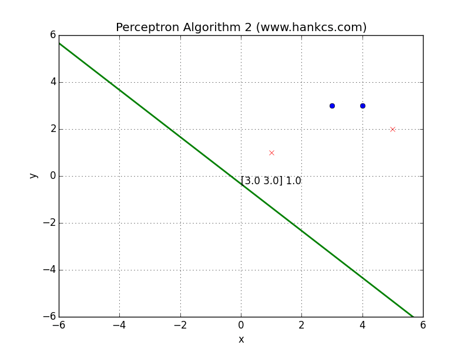《统计学习方法》系列笔记的第一篇，对应原著第二章。大量引用原著讲解，加入了自己的理解。对书中算法采用Python实现，并用Matplotlib可视化了动画出来，应该算是很硬派了。一套干货下来，很是辛苦，要是能坚持下去就好。
概念
感知机是二分类模型，输入实例的特征向量，输出实例的±类别。
感知机模型
定义
假设输入空间是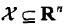，输出空间是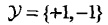，x和y分属这两个空间，那么由输入空间到输出空间的如下函数：
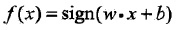
称为感知机。其中，w和b称为感知机模型参数，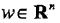叫做权值或权值向量，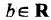叫做偏置，w·x表示向量w和x的内积。sign是一个函数：

感知机的几何解释是，线性方程
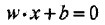
将特征空间划分为正负两个部分：
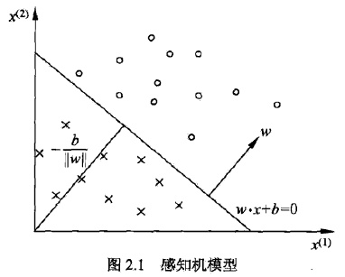
这个平面（2维时退化为直线）称为分离超平面。
感知机学习策略
数据集的线性可分性
定义
给定数据集
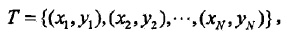
其中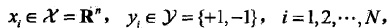如果存在某个超平面S
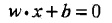
能够完全正确地将正负实例点全部分割开来，则称T线性可分，否则称T线性不可分。
感知机学习策略
假定数据集线性可分，我们希望找到一个合理的损失函数。
一个朴素的想法是采用误分类点的总数，但是这样的损失函数不是参数w，b的连续可导函数，不可导自然不能把握函数的变化，也就不易优化（不知道什么时候该终止训练，或终止的时机不是最优的）。
另一个想法是选择所有误分类点到超平面S的总距离。为此，先定义点x0到平面S的距离：
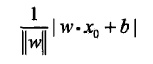
分母 是w的L2范数，所谓L2范数，指的是向量各元素的平方和然后求平方根（长度）。这个式子很好理解，回忆中学学过的点到平面的距离：
是w的L2范数，所谓L2范数，指的是向量各元素的平方和然后求平方根（长度）。这个式子很好理解，回忆中学学过的点到平面的距离：
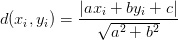
此处的点到超平面S的距离的几何意义就是上述距离在多维空间的推广。
又因为，如果点i被误分类，一定有
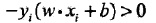
成立，所以我们去掉了绝对值符号，得到误分类点到超平面S的距离公式：
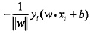
假设所有误分类点构成集合M，那么所有误分类点到超平面S的总距离为
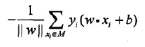
分母作用不大，反正一定是正的，不考虑分母，就得到了感知机学习的损失函数：

感知机学习算法
原始形式
感知机学习算法是对以下最优化问题的算法：
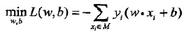
感知机学习算法是误分类驱动的，先随机选取一个超平面，然后用梯度下降法不断极小化上述损失函数。损失函数的梯度由：
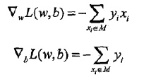
给出。所谓梯度，是一个向量，指向的是标量场增长最快的方向，长度是最大变化率。所谓标量场，指的是空间中任意一个点的属性都可以用一个标量表示的场（个人理解该标量为函数的输出）。
随机选一个误分类点i，对参数w，b进行更新：
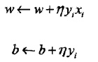
上式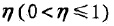是学习率。损失函数的参数加上梯度上升的反方向，于是就梯度下降了。所以，上述迭代可以使损失函数不断减小，直到为0。于是得到了原始形式的感知机学习算法：
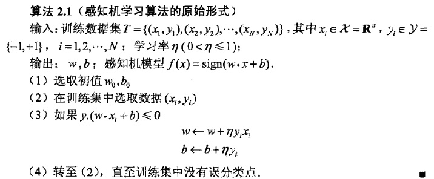
对于此算法，使用下面的例子作为测试数据：
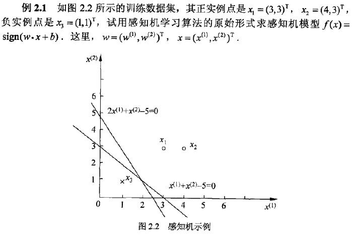
给出Python实现和可视化代码如下：
感知机算法代码
终于到了最激动人心的时刻了，有了上述知识，就可以完美地可视化这个简单的算法：
- # -*- coding:utf-8 -*-
- # Filename: train2.1.py
- # Author：hankcs
- # Date: 2015/1/30 16:29
- import copy
- from matplotlib import pyplot as plt
- from matplotlib import animation
- training_set = [[(3, 3), 1], [(4, 3), 1], [(1, 1), -1]]
- w = [0, 0]
- b = 0
- history = []
- def update(item):
- """
- update parameters using stochastic gradient descent
- :param item: an item which is classified into wrong class
- :return: nothing
- """
- global w, b, history
- w[0] += 1 * item[1] * item[0][0]
- w[1] += 1 * item[1] * item[0][1]
- b += 1 * item[1]
- print w, b
- history.append([copy.copy(w), b])
- # you can uncomment this line to check the process of stochastic gradient descent
- def cal(item):
- """
- calculate the functional distance between 'item' an the dicision surface. output yi(w*xi+b).
- :param item:
- :return:
- """
- res = 0
- for i in range(len(item[0])):
- res += item[0][i] * w[i]
- res += b
- res *= item[1]
- return res
- def check():
- """
- check if the hyperplane can classify the examples correctly
- :return: true if it can
- """
- flag = False
- for item in training_set:
- if cal(item) <= 0:
- flag = True
- update(item)
- # draw a graph to show the process
- if not flag:
- print "RESULT: w: " + str(w) + " b: " + str(b)
- return flag
- if __name__ == "__main__":
- for i in range(1000):
- if not check(): break
- # first set up the figure, the axis, and the plot element we want to animate
- fig = plt.figure()
- ax = plt.axes(xlim=(0, 2), ylim=(-2, 2))
- line, = ax.plot([], [], 'g', lw=2)
- label = ax.text([], [], '')
- # initialization function: plot the background of each frame
- def init():
- line.set_data([], [])
- x, y, x_, y_ = [], [], [], []
- for p in training_set:
- if p[1] > 0:
- x.append(p[0][0])
- y.append(p[0][1])
- else:
- x_.append(p[0][0])
- y_.append(p[0][1])
- plt.plot(x, y, 'bo', x_, y_, 'rx')
- plt.axis([-6, 6, -6, 6])
- plt.grid(True)
- plt.xlabel('x')
- plt.ylabel('y')
- plt.title('Perceptron Algorithm (www.hankcs.com)')
- return line, label
- # animation function. this is called sequentially
- def animate(i):
- global history, ax, line, label
- w = history[i][0]
- b = history[i][1]
- if w[1] == 0: return line, label
- x1 = -7
- y1 = -(b + w[0] * x1) / w[1]
- x2 = 7
- y2 = -(b + w[0] * x2) / w[1]
- line.set_data([x1, x2], [y1, y2])
- x1 = 0
- y1 = -(b + w[0] * x1) / w[1]
- label.set_text(history[i])
- label.set_position([x1, y1])
- return line, label
- # call the animator. blit=true means only re-draw the parts that have changed.
- print history
- anim = animation.FuncAnimation(fig, animate, init_func=init, frames=len(history), interval=1000, repeat=True,
- blit=True)
- plt.show()
- anim.save('perceptron.gif', fps=2, writer='imagemagick')
可视化
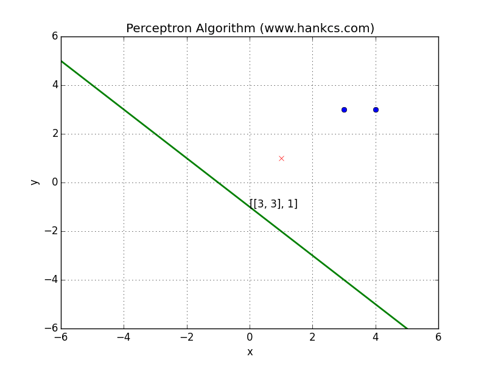
可见超平面被误分类点所吸引，朝着它移动，使得两者距离逐步减小，直到正确分类为止。通过这个动画，是不是对感知机的梯度下降算法有了更直观的感悟呢？
算法的收敛性
记输入向量加进常数1的拓充形式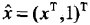，其最大长度为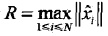，记感知机的参数向量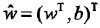，设满足条件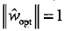的超平面可以将数据集完全正确地分类，定义最小值伽马：
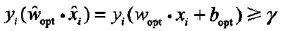
则误分类次数k满足：
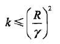
证明请参考《统计学习方法》P31。
感知机学习算法的对偶形式
对偶指的是，将w和b表示为测试数据i的线性组合形式，通过求解系数得到w和b。具体说来，如果对误分类点i逐步修改wb修改了n次，则w，b关于i的增量分别为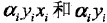，这里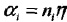，则最终求解到的参数分别表示为：
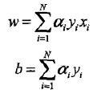
于是有算法2.2：
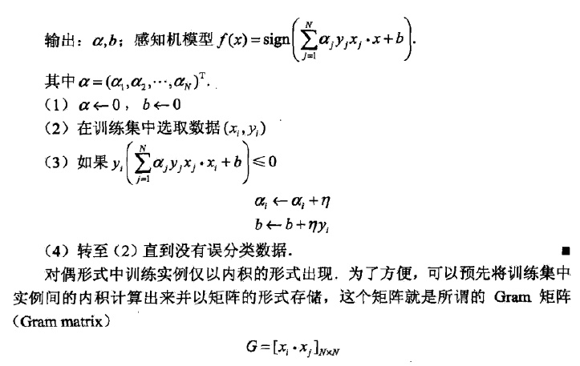
感知机对偶算法代码
涉及到比较多的矩阵计算，于是用NumPy比较多：
- # -*- coding:utf-8 -*-
- # Filename: train2.2.py
- # Author：hankcs
- # Date: 2015/1/31 15:15
- import numpy as np
- from matplotlib import pyplot as plt
- from matplotlib import animation
- # An example in that book, the training set and parameters' sizes are fixed
- training_set = np.array([[[3, 3], 1], [[4, 3], 1], [[1, 1], -1]])
- a = np.zeros(len(training_set), np.float)
- b = 0.0
- Gram = None
- y = np.array(training_set[:, 1])
- x = np.empty((len(training_set), 2), np.float)
- for i in range(len(training_set)):
- x[i] = training_set[i][0]
- history = []
- def cal_gram():
- """
- calculate the Gram matrix
- :return:
- """
- g = np.empty((len(training_set), len(training_set)), np.int)
- for i in range(len(training_set)):
- for j in range(len(training_set)):
- g[i][j] = np.dot(training_set[i][0], training_set[j][0])
- return g
- def update(i):
- """
- update parameters using stochastic gradient descent
- :param i:
- :return:
- """
- global a, b
- a[i] += 1
- b = b + y[i]
- history.append([np.dot(a * y, x), b])
- # print a, b # you can uncomment this line to check the process of stochastic gradient descent
- # calculate the judge condition
- def cal(i):
- global a, b, x, y
- res = np.dot(a * y, Gram[i])
- res = (res + b) * y[i]
- return res
- # check if the hyperplane can classify the examples correctly
- def check():
- global a, b, x, y
- flag = False
- for i in range(len(training_set)):
- if cal(i) <= 0:
- flag = True
- update(i)
- if not flag:
- w = np.dot(a * y, x)
- print "RESULT: w: " + str(w) + " b: " + str(b)
- return False
- return True
- if __name__ == "__main__":
- Gram = cal_gram() # initialize the Gram matrix
- for i in range(1000):
- if not check(): break
- # draw an animation to show how it works, the data comes from history
- # first set up the figure, the axis, and the plot element we want to animate
- fig = plt.figure()
- ax = plt.axes(xlim=(0, 2), ylim=(-2, 2))
- line, = ax.plot([], [], 'g', lw=2)
- label = ax.text([], [], '')
- # initialization function: plot the background of each frame
- def init():
- line.set_data([], [])
- x, y, x_, y_ = [], [], [], []
- for p in training_set:
- if p[1] > 0:
- x.append(p[0][0])
- y.append(p[0][1])
- else:
- x_.append(p[0][0])
- y_.append(p[0][1])
- plt.plot(x, y, 'bo', x_, y_, 'rx')
- plt.axis([-6, 6, -6, 6])
- plt.grid(True)
- plt.xlabel('x')
- plt.ylabel('y')
- plt.title('Perceptron Algorithm 2 (www.hankcs.com)')
- return line, label
- # animation function. this is called sequentially
- def animate(i):
- global history, ax, line, label
- w = history[i][0]
- b = history[i][1]
- if w[1] == 0: return line, label
- x1 = -7.0
- y1 = -(b + w[0] * x1) / w[1]
- x2 = 7.0
- y2 = -(b + w[0] * x2) / w[1]
- line.set_data([x1, x2], [y1, y2])
- x1 = 0.0
- y1 = -(b + w[0] * x1) / w[1]
- label.set_text(str(history[i][0]) + ' ' + str(b))
- label.set_position([x1, y1])
- return line, label
- # call the animator. blit=true means only re-draw the parts that have changed.
- anim = animation.FuncAnimation(fig, animate, init_func=init, frames=len(history), interval=1000, repeat=True,
- blit=True)
- plt.show()
- # anim.save('perceptron2.gif', fps=2, writer='imagemagick')
可视化
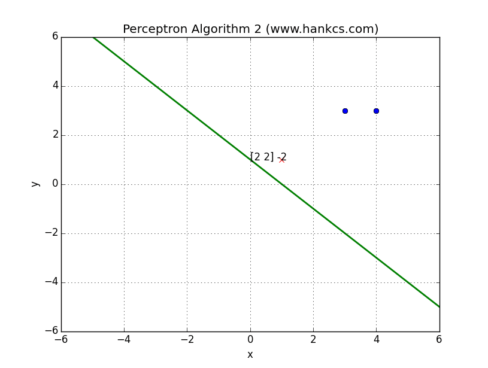
与算法1的结果相同，我们也可以将数据集改一下：
- training_set = np.array([[[3, 3], 1], [[4, 3], 1], [[1, 1], -1], [[5, 2], -1]])
会得到一个复杂一些的结果：
读后感
通过最简单的模型，学习到ML中的常用概念和常见流程。
另外本文只是个人笔记，服务于个人备忘用，对质量和后续不做保证。还是那句话，博客只做补充，要入门，还是得看经典著作。
Reference
文中部分代码参考了OldPanda的实现。
谢谢博主，最近正看这本书，也打算写博客，可否借鉴博主的一些内容？
请问楼主，sign在后来也没有应用啊，难道公式推导的过程里wx+b默认就是sign(wx+b)吗
sign那个是模型函数，在计算的过程中，用不到的。
博主，好厉害。
很不错！